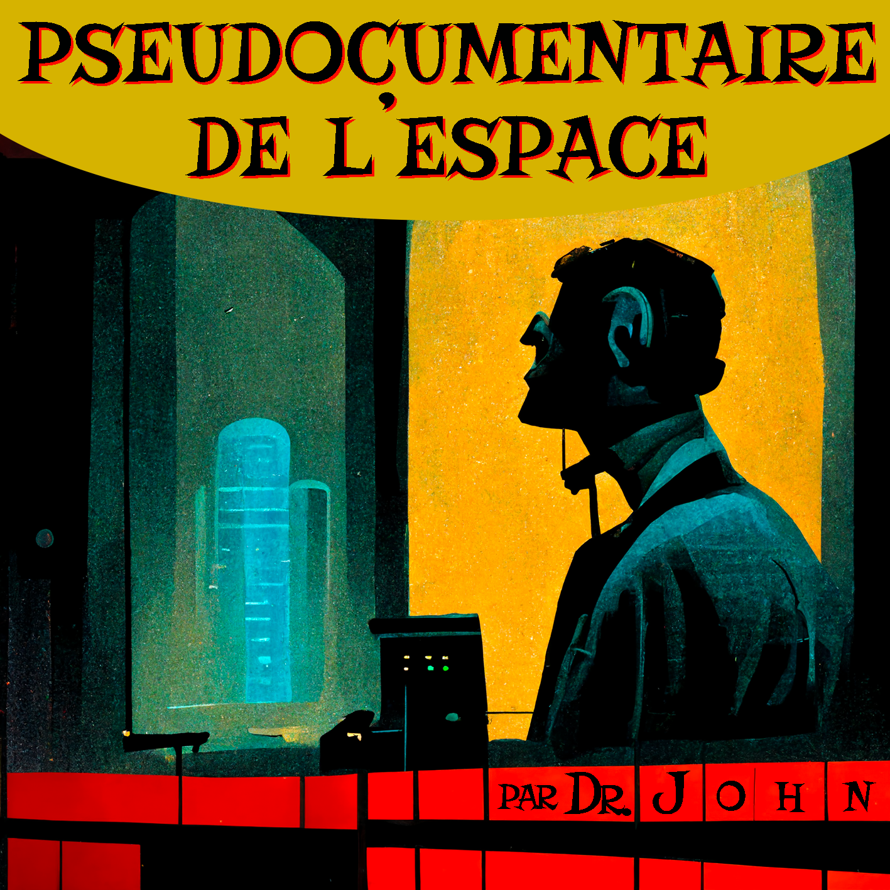

Podcasts
Le Pseudodocumentaire de l'espace
Série de podcasts d’anticipation où tout est faux ! Découvrez-y la vraie bande originale d’un leurre empruntant tout du réel, pour aborder les questions de la dépression verte.
Écouter